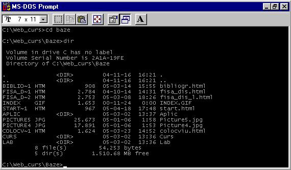
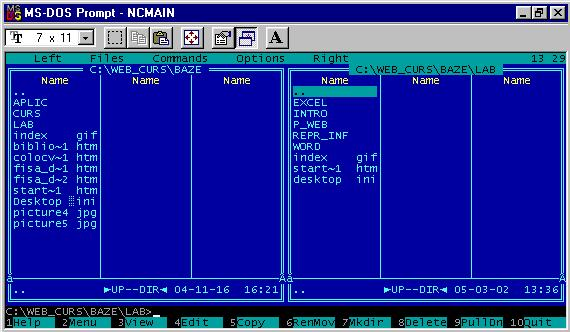

-DOS (Disk Operating System) : sistem de operare destinat gestionarii resurselor hard si soft
ale calculatoarelor personale bazat pe procesoarele x86.
-Este un sistem de operare in mod caracter, monoutilizator.
-Caracteristici:
- Mecanism de tratare a erorilor
- Interfata utilizator in mod comanda simpla si usor accesibila
- Modularitate
- Structura de fisere eficienta (structura arborescenta)
- Gestionarea datei si a timpului
- Recunoaste o mare varietate de dispozitive periferice
- Diversitate mare de resurse software
La punerea in functiune BIOSU-ul testeaza componentele hardware ale calculatorului si le initializeaza.
BIOS-ul preda apoi controlul incarcatorului de sistem, care incarca fisierele sistem IO.SYS si MSDOS.SYS
Se incarca apoi COMMAND.COM si se lanseaza in executie.
COMMAND.COM este un interpretor de comenzi fiind interfata intre utilizator si calculator.
Lansarea sistemului se continua cu operatia de configurare conform datelor din fidsierul
CONFIG.SYS.
Daca exista un fisier AUTOEXEC.BAT(fisier de comenzi), comenzile din acest fisier sunt
executate dupa carese afiseaza prompterul C:\> si se asteapta comenzi de la utilizator.
Organizarea si specificarea fisierelor DOS
- Un fisier este o colectie de informatii stocata sub o anumita forma specifica tipului de fisier si
poate fi identificat dupa nume si extensie.
Numele fisier : maxim 8 caractere.
Extensia- determina tipul fisierului , are 3 caractere fiind separata de numele fisierului
cu caracterul "."
Exemplu : lucrare.doc
Fisierele sunt organizate arborescent pe directoare si subdirectoare.
Specificarea unei cai la un fisier
Specificatorul de fisiere DOS
Format: [d:][cale]nume_fisie[.ext]
[d:]unitatea de disk
[cale] calea catre directorul in care se afla fisierul
nume_fisier numele fisierului
[.ext] extensia
Toate entitatile din cadrul parantezelor drepte pot lipsi
Comenzi dos
Comenzi pentru directoare
Exemple
MD[d:]cale-creare de directoare
CD[d:]cale-schimbare director curent
RD[d:]cale-stergere director
DIR[d:]cale-afisare directoare

Comenzi pentru fisiere
Exemple
COPY[d:][cale]nume_fisier[.ext][d:][cale]nume_fisier[.ext]-copiere fisiere
-primul specificator :fisierul sursa
-primul specificator :fisierul destinatie
EDIT[d:][cale]nume_fisier[.ext]-editare fisiere text
DEL [d:][cale]nume_fisier[.ext][/P]-stergere fisiere
TYPE[d:][cale]nume_fisier[.ext]-tiparire fisiere
Shell-uri DOS
Shell-uri sunt programe care gestioneaza comenzile DOS si permit lansarea lor
intr-o forma mai prietenoasa.
Cel mai popular Shell-DOS este Norton Commander

*
.